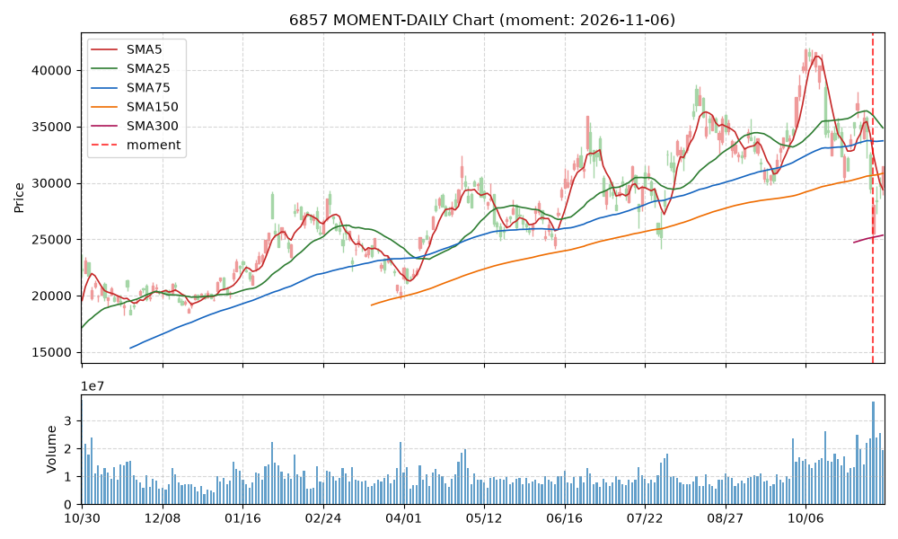
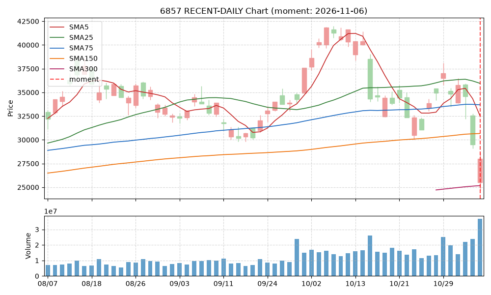
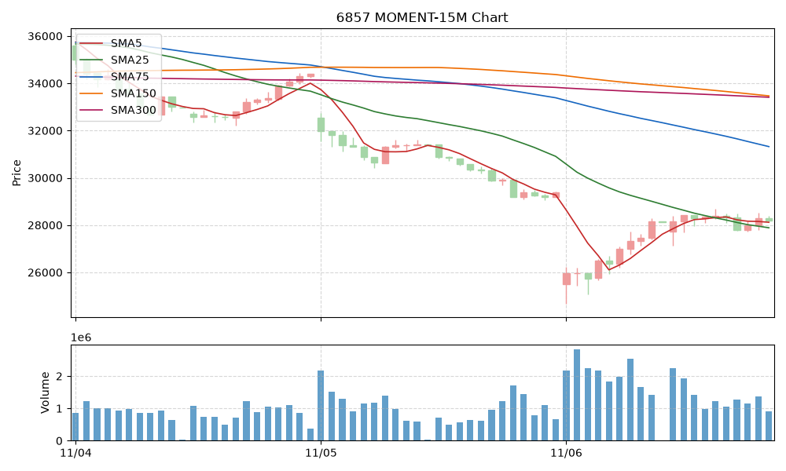
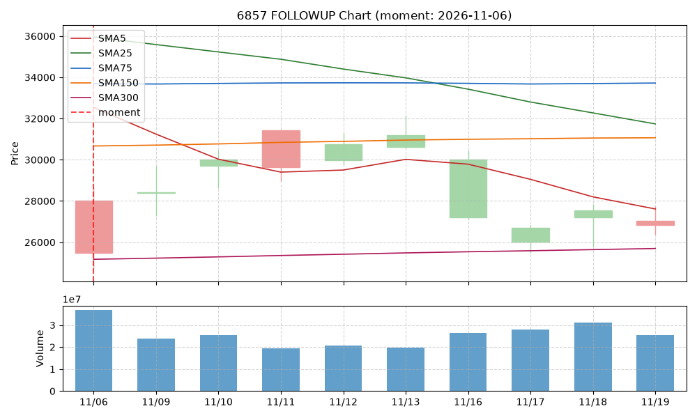

1. 概要＆チャート
方向: 買い
日時: 2026-11-06 06:00:00+00:00
価格: 28000.0



2. 当時の状況
日足
| SMA | 値 | 傾き | 300との乖離率 |
|---|---|---|---|
| 5 | 34343.0 | -1089.0 | 36.7 |
| 25 | 36207.0 | -177.0 | 44.2 |
| 75 | 33737.7 | -3.9 | 34.3 |
| 150 | 30634.5 | 40.4 | 22.0 |
| 300 | 25115.3 | 63.3 | 0.0 |
終値の乖離率（SMA300 との）: 17.4%
15分足
| SMA | 値 | 傾き | 300との乖離率 |
|---|---|---|---|
| 5 | 28119.0 | -35.0 | -15.8 |
| 25 | 27886.2 | -68.6 | -16.5 |
| 75 | 31320.5 | -108.6 | -6.2 |
| 150 | 33467.5 | -45.4 | 0.2 |
| 300 | 33408.5 | -20.3 | 0.0 |
終値の乖離率（SMA300 との）: -15.6%
- 訂正（元不明） 2026-11-06 06:00:00+00:00 controller 下書きの 09:15 / 24,700 を 15:00 / 28,000 に差し替え（元注記の数値自体は正しく、差し替えるのは検討時刻と価格だけ）。09:15 の時点では大陽線が未確定で入れない。似たシーンが次あっても引け近くの 15:00 頃、大陽線がほぼ確定してから判断する。15:00 の 15分足 C=28,035 は日足終値 28,015 の 100.1%。その段階でも SMA 4 本は逆並び・200 の傾き -18.2・乖離 -16.0% のままだったので、確定を待った上でトレンド崩れを優先して見送った。 出典: yfinance:6857.T:15m/2026-11-06, JQuants:6857:daily
3. 判断
- 記憶 2026-11-06 06:00:00+00:00 日足・15分足とも SMA 5/25/75/200 が逆並びで 200 の傾きも下向き、上昇トレンドの崩れは明白だった。ただ 24,000 台のサポート（6/11 安値 24,150・7/29 安値 24,135）と、前日比 -13.6% ギャップから +13.6% 反発した底値大陽線を見て、一時リバウンドを取りたい欲が出た。結局トレンド崩れを優先して見送った。 出典: migrated from reason
4. 反省

判定: —
- 裏取り 2026-11-12 06:00:00+00:00 後知恵（11/12 時点。見送り判断の評価ではない）: 11/09 終値 28,375 → 11/10 29,690 → 11/11 31,440（+5.89%、日経を約 377 円押し上げる主役）。11/06 安値 24,655 から +27.5%。11/12 は 29,985（-4.63%）。事実だけを as_of を分けて残し、『やめて正解だったか』は判定しない。 出典: JQuants:6857:daily, 株探 2026-11-11 日経平均寄与度, Yahoo!ファイナンス 6857.T 時系列